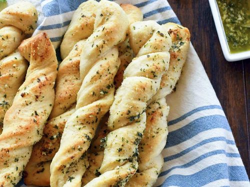

Bread Twists

delicious bread twists of the highest order of yummyness, in less than 30 minutes
Ingredients you'll need:
- Dough
- Minced Garlic
- Shredded cheese
- Garlic Seasoning
- Garlic sauce
Directions:
- Stretch dough and cut into 10 x 10 square, about 1/4 inch thick
- Coat dough lightly in garlic sauce
- Season with garlic rub
- Add 3 ounces of Shredded cheese and 1/2 ounce of minced garlic into a bowl and mix
- Spread mix on bottom half of dough
- Fold dough in half
- Cut into fourths, and cut those fourths into thirds
- Separate the strips and twist them twice
- Place on tray and add a coat of garlic sauce on top before placing in oven
- Bake for 6 minutes at 325 degrees